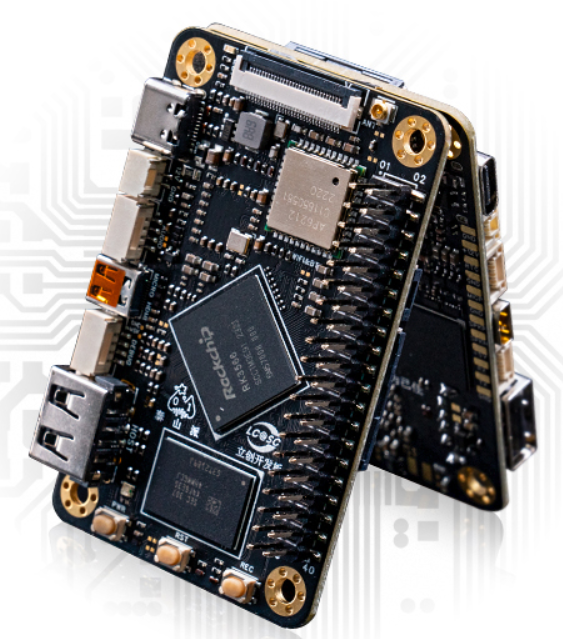
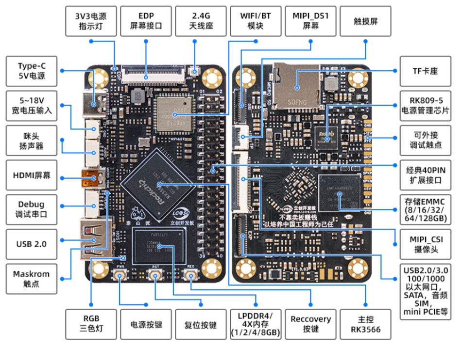
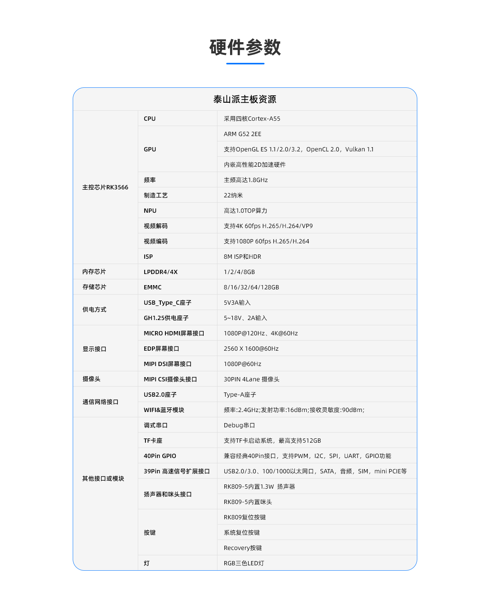

<!DOCTYPE lake>
<p data-lake-id="u3d31ba80" id="u3d31ba80"><span data-lake-id="u5af3c820" id="u5af3c820">	泰山派是一款开源的卡片电脑,提供全面开放的软硬件资料,愿与志同道合的的伙伴们共同推动技术的发展和创新。 小巧的板子搭载了高配的处理器、引出丰富的外部资源、多样性SDK、赋予创意无限可能。 软硬件结合、项目式学习、解决项目落地难问题、让每一个想法变成现实。</span></p><p data-lake-id="u90022e5b" id="u90022e5b"><br/></p><h1 data-lake-id="3dbf0c11" id="3dbf0c11"><span data-lake-id="uc790fc10" id="uc790fc10">应用场景</span></h1><p data-lake-id="u531bacb0" id="u531bacb0"><br/></p><ol list="u4fd4a8c0"><li data-lake-id="u43688db1" fid="u912946ec" id="u43688db1"><span data-lake-id="ua604c1b2" id="ua604c1b2">卡片电脑：办公、编程开发，家庭娱乐、编程教育等</span></li><li data-lake-id="u733676d5" fid="u912946ec" id="u733676d5"><span data-lake-id="u50d82d39" id="u50d82d39">Linux服务器：私有云、软路由、NAS、个人WEB服务器等</span></li><li data-lake-id="udb5ba273" fid="u912946ec" id="udb5ba273"><span data-lake-id="u8d306f57" id="u8d306f57">家庭智能化中枢：电视盒子、智能家居控制、传感器数据分析、安防监控等</span></li><li data-lake-id="ue949769c" fid="u912946ec" id="ue949769c"><span data-lake-id="ua2e14a0e" id="ua2e14a0e">工业化：电子广告牌、自动售卖机、机器人、无人机等</span></li><li data-lake-id="uca30eb51" fid="u912946ec" id="uca30eb51"><span data-lake-id="ufb0e4722" id="ufb0e4722">嵌入式开发板：加速嵌入式项目验证及开发</span></li></ol><p data-lake-id="uefc25536" id="uefc25536"><br/></p><p data-lake-id="u89a6fd4d" id="u89a6fd4d"></p><p data-lake-id="u922c953a" id="u922c953a"></p><h1 data-lake-id="84f40ff0" id="84f40ff0"><span data-lake-id="u4a370d53" id="u4a370d53">硬件参数</span></h1><p data-lake-id="u1d362277" id="u1d362277"><br/></p><p data-lake-id="u4d650177" id="u4d650177"><span data-lake-id="u9b7519cf" id="u9b7519cf">立创泰山派采用 22nm制程 4核 Cortex-A55的64位 CPU </span><strong><span data-lake-id="ubab7f662" id="ubab7f662">RK3566 </span></strong><span data-lake-id="ud91556ec" id="ud91556ec">  , 主频高达1.8GHz. 集成 ARM Mali-G52 GPU , 支持 4K 60fps解码， 1080P 60fps 编码， 支持8M ISP 和 HDR， 内置1T ops算力的AI加速器 NPU。 内存提供： 1/2/4/8 GB可选， 存储：EMMC（8/16/32/64/128GB） ，最高支持512GB的TF扩展</span></p><p data-lake-id="u40086251" id="u40086251"><br/></p><p data-lake-id="uea86bfa7" id="uea86bfa7"></p><p data-lake-id="ue28afed2" id="ue28afed2"></p><p data-lake-id="u7139c6ee" id="u7139c6ee"><br/></p><p data-lake-id="u36c57724" id="u36c57724"><br/></p><p data-lake-id="u12a8f5ab" id="u12a8f5ab"><span data-lake-id="u7c6e8294" id="u7c6e8294">参考学习文档：</span><a data-lake-id="u88d6eec8" href="https://lceda001.feishu.cn/wiki/IJtRwVu5kiylHykl3RJcQ8ANncY" id="u88d6eec8" rel="noopener noreferrer" target="_blank"><span data-lake-id="uba4ee092" id="uba4ee092">https://lceda001.feishu.cn/wiki/IJtRwVu5kiylHykl3RJcQ8ANncY</span></a></p><p data-lake-id="u70719315" id="u70719315"></p><p data-lake-id="u6eab2345" id="u6eab2345"><br/></p><p data-lake-id="ufd39a6fc" id="ufd39a6fc"><br/></p><p data-lake-id="u073ff3d1" id="u073ff3d1"><br/></p><p data-lake-id="u222ac3f1" id="u222ac3f1"><span data-lake-id="u4b471f56" id="u4b471f56">​</span><br/></p>